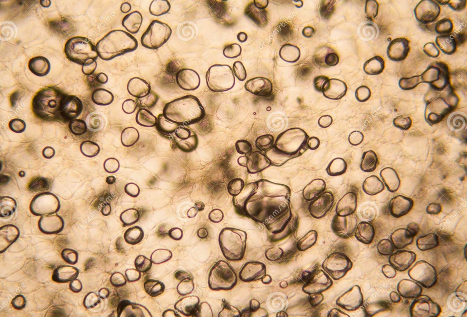
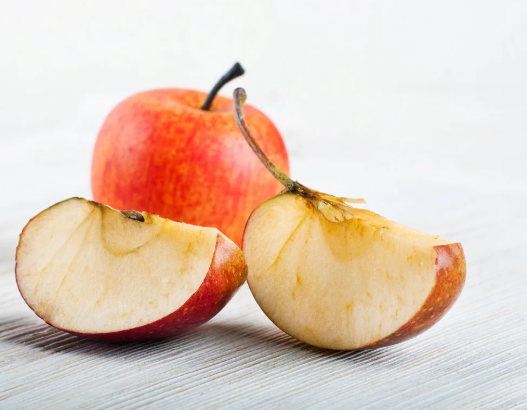

Apple is made of cells (Figure 1). In those cells, there are water, sugars, chemicals, and enzymes. Enzymes are things that accelerate chemical processes. For example, cutting a tree with your hands is like without enzymes, but enzymes are like adding a saw.

So, when you cut an apple, you break those cells. The chemicals, enzymes, and oxygen from the air start interacting. That’s what causes the brown color — a reaction happens that forms brown pigments (similar to melanin) (Figure 2).

Because the cells are broken:
juice leaks out
the structure becomes softer
some flavor compounds react with oxygen
So it’s not really that sugar becomes “off,” but more that the texture and some chemicals change, which affects taste.
For example, if the apple is surrounded by water, browning will be slower. Yes, water does contain oxygen, but only a small amount compared to air, so the reaction happens more slowly.
Salt water slows browning because it changes the environment inside and outside the apple cells. When salt is dissolved in water, it creates a condition where water moves out of the apple cells (osmosis). This slightly stresses the cells and can reduce how effectively enzymes work. As a result, the browning reaction becomes slower.
<<<<<<< HEADSugar water works in a different way. It makes the surrounding liquid thicker and can form a light coating on the apple surface. This coating slows down how quickly oxygen reaches the apple’s chemicals. Because oxygen is needed for browning, slower oxygen access means a slower reaction.
However, these effects are relatively weak compared to stronger inhibitors like lemon juice.
=======Sugar water works in a different way. It makes the surrounding liquid thicker and can form a light coating on the apple surface. This coating slows down how quickly oxygen reaches the apple’s chemicals. Because oxygen is needed for browning, slower oxygen access means a slower reaction.
However, these effects are relatively weak compared to stronger inhibitors like lemon juice.
>>>>>>> 4567950 (Add sum formula article and update library)Lemon juice contains vitamin C, which reacts with oxygen before the apple’s chemicals do, so vitamin C kind of “steals” the reaction.
It is also acidic. Acidic means there are a lot of H⁺ ions. These H⁺ ions change the shape of the enzymes, so they stop working properly. Enzymes only work in specific conditions.
There is something called pH (potential of hydrogen).
pH = 7 → neutral (not acid, not base)
pH < 7 → acidic
pH > 7 → basic
Acids have a high concentration of H⁺ ions, while bases have much lower H⁺ (and more OH⁻ ions).
So, 1–6 means the solution is acidic, and 8–14 means it is basic.
Bananas, potatoes, avocados, pears, and eggplants also turn brown for the same reason — they have similar chemicals and enzymes that react with oxygen.